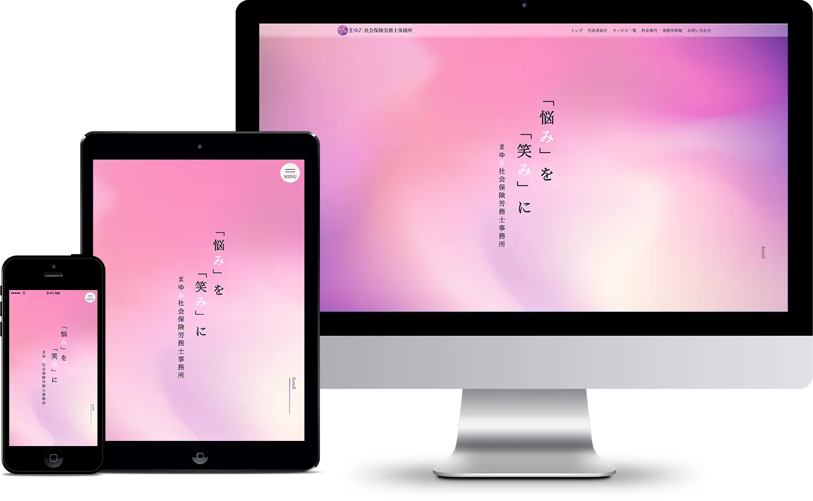

Web site
まゆみ社会保険労務士事務所
サイトURL : https://x.gd/DJO9v/【ID:guest PASS:test】
プレゼン資料 : https://x.gd/LJHgh


- ◼️概要
-
江坂にある社労士事務所
サイトリニューアルのご提案
（職業訓練校での実制作）
- ◼️使用アプリ
-
Figma / Photoshop / Illustrator
VS-code
（HTML / CSS / JavaScript）
- ◼️制作時間
-
情報収集 : 2週間
デザイン : 2週間
コーディング : 2週間
- ◼️カラー
-
「やさしさ・愛情・献身」
- クライアントからの要望・課題
-
・創業時に自作で作ったサイトから一度も変更していないので、サイトを新しくしたい。
・レスポンシブ対応ができておらず、スマホで見る人も多いのでスマホにも対応したい。
・集客はほとんど紹介なので、集客目的ではなく、サイトへ訪問した人に信頼・安心感を与えるサイトにしたい。
・社労士について難しく感じてしまう人が多いので、仕事内容が分かるように詳しく記載してほしい。
・料金表と地図を追加
・ロゴの提案 - コンセプト
-
営業目当てではないということ、信頼・安心できる印象を与えたいこと、社労士を身近に感じてもらいたい、ということより下記のようにコンセプトを決めました。
・社労士さんの気さくな人柄を知ってもらう
・気軽に相談できそうなイメージを与える
・サイトに訪れた人に信頼・安心感をもってもらう - キャッチコピー
-
『悩み』を『笑み』に。まゆみ社会保健労務士事務所
働くことで悩んでいるひとを助けたいという、クライアントの思いをこのキャッチコピーで表現しました。 まゆみの『み』に韻を踏んでおり、親しみやすいキャッチコピーにすることで、下記のように感じてもらえるサイトになるよう意識しました。
・悩みを聞いて解決してくれそう！
・キャッチーな言葉で覚えやすい！親近感ある！
・気軽に相談できて、親身になってくれそう。 - ターゲットの事前調査
-
1_どのような企業がターゲットになるのか、どのタイミングで利用されることが多いのかを調べました。
大阪商工会議所の課題調査より、 「人手が不足している」との回答は全体の第2位でした。
2_社労士が必要になるタイミングについて調べました。
創業手帳のサイトより、「従業員を新たに雇うタイミングや事業拡大時」に多いことがわかりました。
以上のことから、ペルソナを想定しました。 - ペルソナ
-
吹田 華子さん / 36才 / デザイン会社の総務兼経理兼人事
江坂の賃貸で一人暮らし／猫を一匹飼っています／ 休日の予定はいろいろな趣味でストレスを発散
業種はクリエイティブ / 社員9人 / 年収 360 万円
最近、経営に以下のような悩みが起きました。
・給与計算や勤怠管理などを全て任さているので手が回らなくなってきた
・10 人目から就業規則の作成義務があるため、外部委託をしたい
- カスタマージャーニー
-
吹田花子さんが、まゆみ社会保険労務士事務所を利用するまでの行動心理について考えました。
1_「江坂 社労士」でネット検索したところ、何社かヒット
2_その中でも、サイトを見て「料金がわかりやすい ・お堅くない ・相談しやすそう」という印象を受けた
3_まずはメールで相談して、気が合う労務士さんか確認したい
- ポイント
-
・担当者の女性が見ることを想定し、「やさしさ・愛情・献身」という意味のある色から、夕空をイメージしたやさしいグラデーションにしました。
・使用フォントは、 明るく品のある雰囲気 ・信頼感を出したい時にもおすすめのフォントを選びました。
・TOP にはキャッチフレーズを大きく表示し、 社労士についての説明や、クライアントの顔が一目でわかり安心を与えられるようにしました。
※もう一つのデザイン案 （https://x.gd/vZN4c）